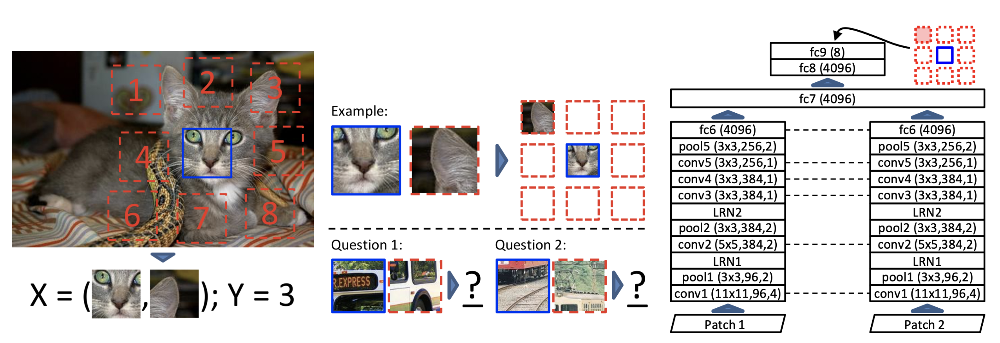
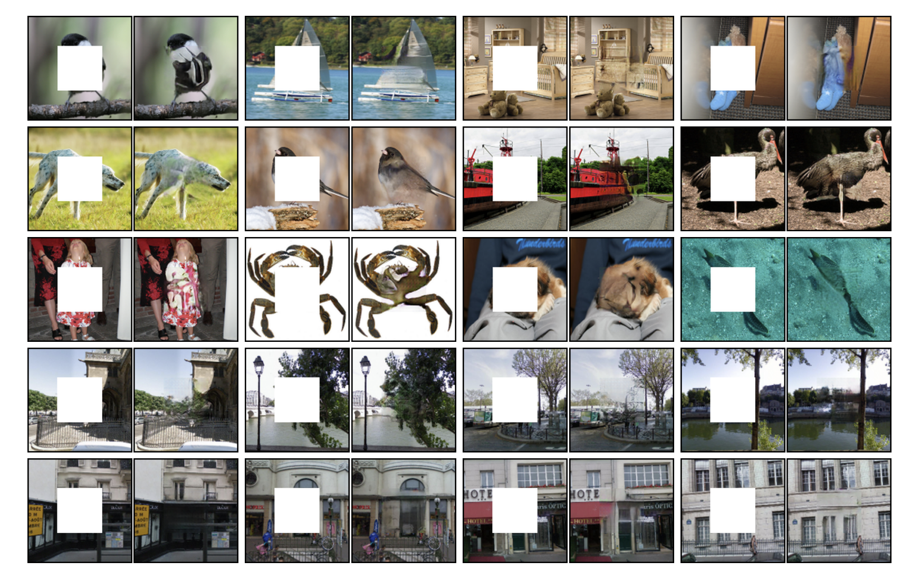

Contrastive Learning
Self-supervised learning
- Supervised learning uses a supervisory signal (e.g. human-annotated labels) to train a model (classification, regression).
- Unsupervised learning only relies on analysing the properties of the data (clustering, dimensionality reduction).
- Semi-supervised learning first extract features on raw data (e.g. autoencoder) and then fine-tunes a model on annotated data.
- Self-supervised learning creates its own supervisory signal from the raw data to extract features using a pretext task or auxiliary task. These features can then be used to learn a supervised learning problem (downstream task).

Pretext tasks can be easily and automatically derived from the existing data, such as predicting the future of a signal.
Generative models (AE, GAN) are somehow self-supervised: reconstructing an image is just a pretext to learn a good latent representation, or to learn to remove noise (denoising AE, Vincent et al., 2010).

word2vec (Mikolov et al., 2013) is trained using the pretext task of predicting the surrounding words in a sentence.


Autoregressive models (RNN) are trained to predict the next value \mathbf{x}_{t+1} of a (multivariate) signal based on its history (\mathbf{x}_{t-T}, \ldots, \mathbf{x}_{t}). At inference time, they can “unroll” the future by considering their prediction as the future “ground truth”. Useful for forecasting: weather, share values, predictive maintenance, etc.

Rotations are applied to an image and the CNN has to guess which one has been applied. By doing so, it has to learn visual features that “understand” what the regular position of an object is.

One can also cut two patches of an image and ask the CNN to predict their relative position on a grid. The task is easier when the CNN “understands” the content of the patches, i.e. has learned good features. Note that the two patches go through the same CNN, but the two outputs are concatenated before the classification layers.

One can also shuffle patches of an image according to a specific permutation, and have the network predict which permutation was applied.

As with denoising autoencoders, context encoders can be trained to generate the contents of an arbitrary image region based on its surroundings. The loss function is the sum of the reconstruction loss and an adversarial loss (as in GANs). Useful for in-paintings. The encoder part can be fine-tuned on classification tasks.


Triplet siamese networks have to guess whether three frames are consecutive in a video sequence or not.

Contrastive learning
The idea of contrastive learning is to force a neural network to learn similar representations for similar images (e.g. cats), and different representations for different images (cats vs. dogs).
In supervised learning, this is achieved by forcing the output layer to linearly separate the classes, so the last FC layer must group its representation of cats together and separate it from dogs. But how could we do this without the labels?

A cheap and easy to obtain similar instances of the same class without labels is to perform data augmentation on the same image:
- crop, resize, flip, blur, color distortion….
Ideally, the representation for these augmented images should be similar at the end of the neural network.


SimCLR (Simple framework for Contrastive Learning of visual Representations, Chen et al., 2020) generates a positive pair of augmented images. Both images \mathbf{x}_i and \mathbf{x}_j go through the same CNN encoder f (e.g. a ResNet-50) to produce high-level representations \mathbf{h}_i and \mathbf{h}_j. The representations are passed through a FCN g to produce embeddings \mathbf{z}_i and \mathbf{z}_j. The goal is to maximize the similarity or agreement between the embeddings \mathbf{z}_i and \mathbf{z}_j, i.e. have the vectors as close as possible from each other..

The similarity between the embeddings \mathbf{z}_i and \mathbf{z}_j is calculated using the cosine similarity:
\cos(\mathbf{z}_i, \mathbf{z}_j) = \dfrac{\mathbf{z}_i^T \, \mathbf{z}_j}{||\mathbf{z}_i|| \, ||\mathbf{z}_j||}
Colinear vectors have a cosine similarity of 1 (or -1), orthogonal vector have a cosine similarity of 0. Note that one could use the L2-norm, but it would force the vectors to have the same norm.


SimCLR actually selects a minibatch of K images and generates two augmented images for each of them.
For an image k, the goal is to:
- maximize the similarity between the embeddings \mathbf{z}_{2k} and \mathbf{z}_{2k+1} of the positive pair,
- minimize their similarity with the other augmented images ((K-1) negative pairs).
There could be another instance of the same class in the minibatch, but in practice it will not matter much. The batch size should be quite big (K=8192) to allow for many relevant negative pairs.

The NT-Xent (Normalized Temperature-Scaled Cross-Entropy Loss) loss function allows to achieve this. It is a variant of the Noise Contrastive Estimator (NCE) loss.
Let’s first transform the cosine similarity between two images i and j into a probability using a softmax:
s(i, j) = \dfrac{\exp \dfrac{\cos(\mathbf{z}_i, \mathbf{z}_j)}{\tau}}{\sum_{k \neq i} \exp \dfrac{\cos(\mathbf{z}_i, \mathbf{z}_k)}{\tau}}

For a positive pair, this softmax represents the probability that the second augmented cat is closer to the first one, compared to the other negative images in the minibatch:

By maximizing this probability for a positive pair, we not only maximize the similarity between them, but we also minimize the similarity with the negative pairs, as they appear at the denominator!
In practice, we will minimize the negative log-likelihood:
l(i, j) = - \log s(i, j)
Note that the loss function is not symmetric, as the denominator changes:


For a positive pair (2k, 2k+1), we will then average the two losses:
l(k) = \dfrac{- \log s(2k, 2k+1) - \log s(2k+1, 2k)}{2}
Finally, we sum over all positive pairs in the minibatch to obtain the NT-Xent (Normalized Temperature-Scaled Cross-Entropy Loss) loss:
\mathcal{L}(\theta) = - \dfrac{1}{2 \, K} \, \sum_{k=1}^K \, \log s(2k, 2k+1) + \log s(2k+1, 2k)

The loss is defined only over positive pairs in the minibatch, but the negative pairs influence it through the softmax. The temperature plays an important role and should be adapted to the batch size and the number of epochs.
After performing contrastive learning on the training set of ImageNet, the Resnet-50 encoder can be used to:
- linearly predict the labels using logistic regression.
- fine-tune on 1% of the training data.

A simple logistic regression on the learned representations is already on-par with fully supervised models.


https://amitness.com/2020/03/illustrated-simclr/
https://towardsdatascience.com/understanding-contrastive-learning-d5b19fd96607
https://lilianweng.github.io/posts/2019-11-10-self-supervised/
https://lilianweng.github.io/posts/2021-05-31-contrastive
https://uvadlc-notebooks.readthedocs.io/en/latest/tutorial_notebooks/tutorial17/SimCLR.html
https://docs.google.com/presentation/d/1ccddJFD_j3p3h0TCqSV9ajSi2y1yOfh0-lJoK29ircs